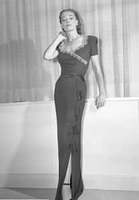
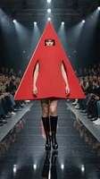
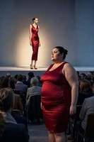

Moda, stil ve tarih
🔹 Daha ince görünmek mi istiyorsunuz? Dikey kontrast prensibini kullanın. Fikir basit: monokrom bir temel artı kontrastlı bir üst katman. Örneğin, bej bir takım ve yeşil bir palto. Önemli olan onu iliklememek. Bu dikey çizgi silueti görsel olarak uzatır. İlginizi çekti mi? Açıklamadaki ilk bağlantıyı takip edin — kendiniz değerlendirin. |
🔹 Eski çağlarda gözler boyanır mıydı?
Evet ve bu yaygın bir olguydu. Göz makyajı özellikle Antik Mısır'da yaygındı ve erkekler, kadınlar ve hatta firavunlar tarafından uygulanıyordu. Ancak nedenler modern güzellik anlayışından uzaktı:
Mezopotamya'da göz makyajı soyluluk belirtisiydi, Antik Yunan'da ise tam tersine yabancılara özgü sayılıyordu. Ancak her durumda bu sadece kozmetik bir işlem değil, pratik ve kutsal bir zorunluluktu. |
🔹 Moda tasarımcısı — podyumda sanatçı Moda tasarımcısı — o kimdir? Tuval üzerinde değil, kumaş üzerinde resim yapan bir sanatçı. Bina değil, siluet inşa eden bir mühendis. Bedeni insanın kendisinden daha iyi anlayan bir psikolog. Moda tasarımcısı, fikri her gün giydiğiniz giysiye dönüştüren kişidir. Malzemeyi hisseder, kumaşın omuza nasıl düşeceğini, yıkama sonrası dikişin nasıl davranacağını bilir. Kadını görür ve neye ihtiyacı olduğunu anlar. Bu meslek hesaplarla desteklenen büyüdür. Raylara oturtulmuş yaratıcılık. Ve eğer bunun sizin çağrınız olduğunu hissediyorsanız — korkmayın. Çizin, dikin, yaratın. Dünya koleksiyonunuzu bekliyor. |
🔹 Napolyon Bonapart neden askerlerin üniformalarının kollarına düğme dikilmesini emretti? Erkek ceketlerinin kollarındaki düğmelerin ortaya çıkışını Napolyon Bonapart'ın adıyla bağdaştıran ilginç bir efsane vardır. Bu hikayeye göre, imparator birlikleri teftiş ederken askerlerinin üniformalarının kollarının uygunsuz göründüğünü fark etti — kirli ve lekeliydiler. Neden basitti: çoğu köylü ailelerden gelen askerler, mendil yerine burunlarını ve ağızlarını kollarıyla silmeye alışmışlardı. Askerleri bu hijyenik olmayan alışkanlıktan vazgeçirmek için Napolyon, üniformaların kollarına metal düğmeler dikilmesini emretti. Artık kolla burun silmek son derece rahatsız ve hatta acı verici hale geldi — düğmeler yüzü çiziyor ve mukus kumaş tarafından emilmiyor, metal üzerinde kalıyordu. Zamanla askerler bu alışkanlığı bıraktı. Ancak bu versiyonun popülerliğine rağmen, tarihçiler bunu tarihsel gerçeklikten çok çekici bir efsane olarak görüyorlar. Kollardaki benzer dekoratif unsurlar 17. yüzyılda ortaya çıkmıştı — Napolyon'dan çok önce. Metal düğmelerin askeri üniformalarda yaygın kullanımı ise ancak 1784'ten sonra başladı. Yine de bu efsane popüler kültüre sağlam bir şekilde yerleşti ve zamanla kollardaki düğmeler sivil giyime geçerek erkek ceketlerinin orijinal işlevini yerine getirmeyen dekoratif bir unsuru haline geldi. |
🔹 Hangi ülke ve hangi yılda dünyanın ilk resmi Moda Haftası'nı düzenledi?  Dünyanın ilk resmi Moda Haftası 1943'te New York'ta gerçekleşti ve "Basın Haftası" (Press Week) olarak adlandırıldı.Etkinlik, nüfuzlu New Yorklu yayıncı ve New York Giyim Enstitüsü basın direktörü Eleanor Lambert tarafından düzenlendi. Neden o zaman? Neden II. Dünya Savaşı'ydı. Vogue ve Harper's Bazaar gibi önde gelen moda dergilerinin editörleri, o dönemde modanın tartışmasız başkenti olan işgal altındaki Paris'e gidemiyordu. Amerikan halkını sezonun yeniliklerinden mahrum bırakmamak ve daha da önemlisi kendi endüstrilerine ivme kazandırmak için Lambert, Amerikalı tasarımcıların çalışmalarının sergilendiği basın gösterileri düzenledi. Bu etkinlik bir zafer oldu: Amerikan modası nihayet dünya çapında tanındı ve daha önce Fransız tasarımlarıyla dolu olan dergiler giderek daha fazla yerel tasarımcılarla ilgili materyaller yayınlamaya başladı. 1950'lerden itibaren "Basın Haftası" resmi olarak New York Moda Haftası olarak anılmaya başlandı. Bu arada, ilk Moda Haftası'nın gösterilerinden birinden çok ilginç bir fotoğraf var. Fotoğrafta Joe Copeland'ın yırtmaçlı gece elbisesini giyen bir manken görülüyor. |
🔹Orta Çağ'da ayakkabı burun uzunluğu (poulaines) neden kişinin soyluluğunu gösteriyordu? 14. ve 15. yüzyıllarda Avrupa'da şaşırtıcı bir moda yayıldı: erkekler aşırı uzun ve sivri burunlu ayakkabılar giyiyordu ve bunlara poulaines veya Krakow ayakkabıları deniyordu. Burun ne kadar uzunsa, sahibinin statüsü o kadar yüksek kabul ediliyordu — en varlıklı aristokratlar 10-12 santimetreden uzun burunlu modeller sipariş ediyordu ve bazı örnekler 45 santimetreye ulaşıyordu. Bu modanın sırrı basitti: zenginlik ve aylak yaşam tarzının gösterisi olarak hizmet ediyordu. Bu tür burunlu ayakkabılarla hızlı hareket etmek veya fiziksel iş yapmak imkansızdı — bu, pahalı bir spor araba veya markalı saatin orta çağdaki karşılığıydı. Poulaine giyen kişi herkese ellerinden çalışmadığını ve bilerek pratik olmayan ayakkabılarla yürümeyi göze alabileceğini gösteriyordu. Moda o kadar aşırı hale geldi ki yetkililer müdahale etmeye başladı. 1463'te İngiltere Kralı IV. Edward, nüfusun çoğunluğunun iki inçten (yaklaşık 5 cm) uzun burunlu ayakkabı giymesini yasaklayan bir yasa çıkardı. Kuralları ihlal edenler para cezasına çarptırıldı ve çok uzun poulaine üreten kunduracılar Londra'da çalışma hakkını kaybetti. Paris'te benzer bir yasak daha önce — 1368'de — getirilmişti. İlginç bir detay: poulaine'lerin erotik çağrışımları olduğuna dair bir versiyon da var. Ayakkabılar, renkli çorapları ve erkeğin bacaklarını vurgulamak için ayak bileğinden alçak yapılıyordu ve bazı çağdaşlar burun uzunluğunu erkeklik gücüyle ilişkilendiriyordu. Tam da bu "edepsizlik" nedeniyle kilise poulaine'lere "Şeytan'ın pençeleri" adını takmıştı. 15. yüzyılın sonunda poulaine modası ortadan kalktı ve yerini geniş kare burunlu ayakkabılara bıraktı, ancak bu abartılı ayakkabının tarihi, giyimin statü dili olarak nasıl hizmet edebileceğinin en çarpıcı örneklerinden biri olmaya devam ediyor. |
🔹 Moda ve stil hakkında alıntılar
Coco Chanel "Moda geçer, stil kalır."
Yves Saint Laurent
Karl Lagerfeld
Gianni Versace
Coco Chanel |
|
🔹 Modern bluz modelleriyle tanışın.
|
🔹 Rahat ipek düğmeli gömlek (Everlane The Boxy Shirt)
|
🔹 Desenli hafif pamuklu bluz (Trovata Clara Blouse)
|
🔹Yuvarlak yakalı günlük üst (Dôen June Top)
|
🔹Klasik dar ipek gömlek (Theory Fitted Silk Georgette Shirt)
|
🔹Uygun fiyatlı V-yaka ipek bluz (Quince Washable Stretch Silk)
|
🔹Fırfırlı romantik bluz (Dôen Henri Top)
|
🔹Yoğun ipek tişört-bluz (MM LaFleur The Annika Tee)
|
🔹Dar temel ipek tişört (Lilysilk Basic Silk T-Shirt)
|
🔹Moda kişisel özgürlük biçimi mi yoksa sosyal kontrol ve pazarlama aracı mı?  Moda ikili bir olgudur. Bir yandan bize ifade özgürlüğü verir. Diğer yandan "güncel" olanı ve "umutsuzca modası geçmiş" olanı dikte ederek bizi fark edilmeden kontrol eder. Peki gerçekte nedir?Özgürlük olarak moda. Kıyafetlerimizi seçerken dünyaya kendimiz hakkında bilgi veririz. Stil bir kartvizit haline gelir: renk, kesim ve aksesuarlar aracılığıyla ruh halimizi, sosyal statümüzü, belirli bir alt kültüre aidiyetimizi aktarır veya sadece bireyselliğimizi ilan ederiz. Moda bize deney yapma hakkı verir. Bugün uzun bir elbise giyebilir, yarın botlu bir deri ceket, öbür gün ise şık bir takım elbise. Ve hepsi kendi tarzında doğrudur. Modern dünyada neredeyse hiç yasak yoktur: oversize dar silüetlerle, parlak desenler minimalizmle yan yana bulunur. Kontrol ve pazarlama aracı olarak moda. Ama bir de diğer yüzü var. Moda endüstrisi, sürekli trend değişiklikleriyle yaşayan devasa bir iştir. Her sezon bize şöyle denir: "Paltounuz artık giyilmiyor", "Bu renk modası geçti", "Gardırobunuzu acilen yenilemelisiniz". Pazarlama böyle çalışır — yapay memnuniyetsizlik yaratarak. Ayrıca, moda tarihsel olarak sosyal kontrol aracı olmuştur. Hatırlayın: Orta Çağ'da ayakkabı burun uzunluğu soyluluğu gösteriyordu. Ofislerdeki ve eğitim kurumlarındaki katı kıyafet yönetmelikleri hala görünümü standartlaştırıyor. Bazı kültürlerde hala katı sınırlar var — kadınlar ve erkekler nasıl giyinmeli. Sosyal medya yeni bir baskı düzeyi ekliyor: kendimizi blogcular ve influencer'larla karşılaştırıyoruz, mükemmel resmin arkasında filtreler, Photoshop ve ticari sözleşmeler olduğunu unutuyoruz. Peki gerçek nerede? Moda ikircikli bir araçtır. Bilinçli seçtiğinizde özgürlük haline gelir — trendleri körü körüne takip etmeyip, bunları kendi stilinizin paleti olarak kullanırsınız. Moda, düşüncesizce ona teslim olduğunuzda, "ana akımın" dışına düşmekten korktuğunuzda kontrole dönüşür. Cevap basit: moda sadece bir tuvaldir. Ve sanatçı sizsiniz. Sadece siz ne giyeceğinize ve neden giyeceğinize karar verirsiniz. Seçim kalpten geliyorsa, "modasız" olma korkusundan değilse, doğru yoldasınız. |
🔹Bilinçli tüketim ve "sonsuza dek" gardırop konsepti baskısı altında mikro trendler öldü mü? Kesin bir "evet" veya "hayır" yok. Mikro trendler ölmedi, ancak etkileri belirgin şekilde azalıyor. Sonsuz yenilik arayışının yerini başka bir felsefe alıyor — bilinçli tüketim ve "sonsuza dek" gardırop. Mikro trendlerin gerileme belirtileri İngiliz yeniden satış platformu Depop'un 43,5 milyon kullanıcının davranış analizine dayanan raporuna göre, Z kuşağı gardırobunu sürekli yenilemeyi bırakıp bilinçli seçimlere yöneliyor. Katılımcıların %78'i sık sık aynı görünümleri tekrarlıyor ve %61'i bir trende uymak için değil, kendine güven duymak için giyiniyor. 2023'te 1,3 milyar dolar olarak değerlendirilen kapsül gardırop pazarı, 2030'a kadar 2,6 milyar dolara ulaşabilir. Bu, "az ama öz" konseptinin artan popülaritesinin doğrudan bir kanıtıdır. Yerini ne alıyor? Normcore ve "sıkıcı moda". 2025'te bu minimalist stil yeniden doğuyor. Edited verilerine göre, nötr tonlardaki temel ürünlerin satışları 2025'in ilk çeyreğinde %13 arttı. TikTok'ta #normcore etiketi 140 milyondan fazla görüntüleme topladı. Tüketiciler yıllarca giyilebilecek basit, tanınabilir siluetleri seçiyor. Frugal chic (tutumlu şıklık). Terim, İngiliz blogcu Mia McGrad tarafından icat edildi ve gardıroba tutumlu yaklaşım hakkındaki videoları iki milyondan fazla izlendi. Felsefe basit: tasarruf için tasarruf değil, gerçekten ihtiyaç duyulan ve uzun süre giyilebilecek ürünlerin bilinçli seçimi. PwC'ye göre, Z kuşağı ve milenyallar 2025'te giyim harcamalarını %13 azalttı — ve bu eğilim güçleniyor. Modern üniforma. Gençlerin yarısından fazlası aynı görünümleri tekrarlamayı özgürleştirici buluyor. Sürekli yenilik göstermek yerine istikrar ve tanınabilirliği seçiyorlar. Peki mikro trendler ne olacak? Birçok alıcı artık trendleri düşüncesizce takip etmiyor. Araştırmalar, insanların giderek kendi stillerine sadık kaldıklarını gösteriyor — ve bunun arkasında sadece fiyat baskısı değil, tüketici yarışından bilinçli bir çıkış var. Dahası, mikro trendlerin bile kendi paradoksları var. Sözde "tutumlu şıklık" kendisi bir trend haline geliyor — kendi "ebedi" ürün kanonuyla (kaşmir kazak, beyaz gömlek, deri baget çanta). Özünde, bu tüketimden vazgeçme değil, bir yükseltme: nicelikten premium kaliteye geçiş. Sonuç. |
🔹Modern sokak modası çağın tam yansıması olarak adlandırılabilir mi, yoksa bu bir fikir krizi mi? Bu sorunun cevabı paradoksaldır. Sokak modası (hoodie, spor ayakkabı) bugün hem zamanımızın en parlak yansıması hem de moda endüstrisinde derin bir fikir krizinin kanıtıdır. Çağın yansıması: sokakların sesi ve özgürlük talebi Sokak stilinin en büyük başarısı — modayı insanların gerçek ihtiyaçlarına geri getirmesidir. Konfor, pratiklik ve işlevsellik gösterişten daha önemli hale geldi. Artık trendleri dikte eden podyum değil, sokak — bu, on yıllardır var olan sistemin tam tersidir. Bu anlamda sokak modası, özgürlük, özgünlük ve katı kuralları reddetme arzusuyla çağımızın ideal aynasıdır. Araştırmalara göre, genç tüketicilerin %60'ından fazlası kültürel özgünlüğü yansıtan markaları seçiyor. Fikir krizi: isyan iş haline geldiğinde 2017'de Louis Vuitton, Supreme ile birleşti — bu an, sokak modasının nihayet lüks sistemine nasıl girdiğinin sembolü oldu. Kıtlık mühendisliği ve logolar üzerinden statü üzerine kurulu endüstri, yüz milyarlarca dolar kazanmaya başladı. Gerçek kültür sulandırıldı. "Streetwear is dead" — sokak modasının baş mimarlarından Virgil Abloh'un bu sözleri bugün kehanet gibi geliyor. İşin ölümünü değil, sokak modasının net sınırları olan kültürel ve alt kültürel bir fenomen olarak ölümünü kastediyordu. Ölçeklenme peşinde koşarken endüstri en değerli şeyi — toplulukla bağlantıyı kaybetti. "Statü artık insanların bilmediği markaları giymekle tanımlanıyor. Yaygın olarak bilinmeyen bir topluluğun parçası olmak — zevkin yeni motoru bu" diyor Undiscovered platformunun kurucusu Kelly Acheampong. Moda "homojen" hale geldi, sanki herkes birbirini kopyalıyor. Ölüm değil, yeniden doğuş Mikro-markalar ve dar, niş topluluklarla "sessiz" işbirlikleri, gürültülü ve pahalı işbirliklerinin yerini alıyor. Örneğin, Supreme'in yeraltı grubu SALEM ile son işbirliği gösteriyor: kültür milyar dolarlık kamuoyu olmadan da var olabilir. Özgünlük, bağlantı, sosyal mesaj — bu yeni para birimi haline geliyor. Logolar ve "hype" yerine — anlam ve sorumluluk. Bu artık sadece bir "fikir krizi" değil, sokak kültürüne orijinal anlamını geri kazandırma girişimidir. Sonuç Çağın tam yansıması, çünkü zamanın ana talebine — kendin olmak, özgür ve rahat olmak — cevap veriyor. Kültürün para kazanma aracı haline geldiği ve "kodunun" anlaşılmaz hale geldiği anda ortaya çıkan fikir krizi. Gerçek şu ki, sokak modası şu anda özgürlük ruhu ile piyasa mekanizmaları arasında bir savaş alanıdır. Hoodie ve spor ayakkabılar uzun süre bizimle olacak, ancak soru yarın ne anlam taşıyacaklarıdır. |
🔹Trendleri körü körüne takip etmek ile gerçek kişisel stil oluşturmak arasındaki fark nedir?  İlk bakışta her ikisi de moda görünür. Ancak yakından bakıldığında, aralarındaki fark kopya ile orijinal arasındaki gibidir.Trendleri körü körüne takip etmek. Blogcular veya dergiler söylediği için her altı ayda bir gardırobunu tamamen yenileyen kişi. Davranışı: "Trend" olan her şeyi satın alır, üzerine yakışmasa bile. Geçen sezonun kıyafetlerini atar veya saklar (artık "güncel" değiller). "O" çantayı veya spor ayakkabıları alamadıysa endişe duyar. Kendisi için değil, başkalarını memnun etmek için giyinir. Sonuç: Herkese benzer. Yüzü yok, sadece mevcut sezonun maskesi var. Gardırobu, kendi parasıyla satın alınmış başkalarının fikirlerinden oluşan bir koleksiyondur. Bu tür insanlar sıklıkla boşluk hisseder çünkü kıyafetler kişiliklerini yansıtmaz. Gerçek kişisel stil. Davranışı: Trendleri inceler, ancak onlardan yalnızca kendisine uygun olanı alır. Yıllarca hizmet edecek kaliteli temel ürünlere yatırım yapar. "Modadan düşme" korkusuyla değil, bilinçli olarak deney yapar. Kendisi için giyinir — ve süreçten zevk alır. Sonuç: Bir imzası vardır. Kalabalıkta tanınır. Herkes gibi görünmekten korkmaz çünkü özgüveni içinden gelir. Kıyafet onun için çalışır, o kıyafet için değil. |
🔹Yapay zeka tasarımcıların çalışmalarını ve trend tahminini nasıl değiştirecek? Yapay zeka tasarımcıların yerini almaz, ancak rollerini kökten değiştirir. Uygulayıcılardan yönetmen ve küratör olurlar. Eskiden konsept oluşturma günler alırdı: referanslar, eskizler, renk arayışı. Şimdi sinir ağları dakikalar içinde yüzlerce seçenek üretiyor. Tasarımcının görevi çizmek değil, talebi doğru formüle etmek, en iyiyi seçmek ve detayları geliştirmektir. Yapay zeka rutini üstlenir, insana anlam için zaman bırakır. Daha da radikal değişiklikler trend tahmininde. Eskiden bu sezgiye dayalı bir sanattı. Şimdi algoritmalar sosyal medyadaki milyonlarca görüntüyü ve defileleri gerçek zamanlı olarak tarıyor. Mikro değişiklikleri — renk veya form kaymalarını — insan gözü onları görmeden çok önce fark ediyorlar. Trendler artık bir yıl önceden değil, haftalar öncesinden tahmin ediliyor. Markalar anında tepki verebiliyor. Ayrıca, yapay zeka tasarımı kişiselleştiriyor: tek bir ortalama koleksiyon yerine, belirli kullanıcıya uyarlanan modüller oluşturuluyor. Ancak bir risk de var: yapay zeka geçmişten öğrenir. Sadece başarılı örneklerle beslenirse, güvenli ve benzer çözümler üretecektir. İnsan irrasyonellik için gereklidir — kalıpları kırma ve beklenmeyeni yaratma yeteneği. Sonuç basit: daha iyi çizenler değil, daha iyi soru soranlar kazanır. Tasarımcılar eskiz için zaman savaşını bırakıp anlam için savaşmaya başlayacaklar. Ve bu çok daha ilginç. |
Change page language: |